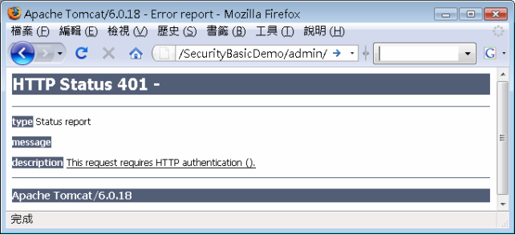
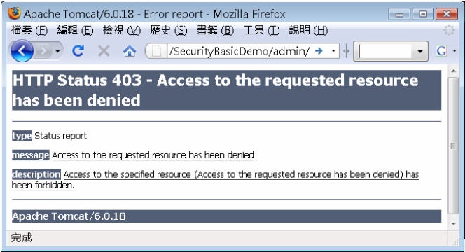

|
|
如果打算讓Web容器提供基本驗證的功能，則可以在web.xml中定義： <login-config>
<auth-method>BASIC</auth-method> </login-config> 接著要授予指定角色存取頁面的權限，所以要先定義角色。之前說過，目前不知道這個應用程式將部署到哪個伺服器上，所以也無法預測會有哪些使用者名稱與群 組，所以在進行授權管理前，無法根據使用者名稱或群組來進行授權，而是根據角色。所以在授權之前，必須定義這個應用程式中，有哪些角色名稱。可以在 web.xml中如下定義： <security-role>
<role-name>admin</role-name> <role-name>manager</role-name> </security-role> 在這邊定義了admin與manager兩個角色名稱。接著定義哪些URL可以被哪些角色以哪種HTTP方法存取。例如，設定/admin下所有頁面，無論使用哪個HTTP方法，都只能被admin角色存取： <security-constraint>
<web-resource-collection> <web-resource-name>Admin</web-resource-name> <url-pattern>/admin/*</url-pattern> </web-resource-collection> <auth-constraint> <role-name>admin</role-name> </auth-constraint> </security-constraint> 如果有多個角色可以存取，則<auth-constraint>標籤中可以設置多個<role-name>標籤。在這邊看不到任何HTTP方法規範的定義，預設就是所有HTTP方法都受到限制。再來看另一個例子： <security-constraint>
<web-resource-collection> <web-resource-name>Manager</web-resource-name> <url-pattern>/manager/*</url-pattern> <http-method>GET</http-method> <http-method>POST</http-method> <http-method-omission>TRACE</http-method-omission> </web-resource-collection> <auth-constraint> <role-name>admin</role-name> <role-name>manager</role-name> </auth-constraint> </security-constraint> 在這個設定中，對於/manager下的所有頁面，根據<http-method>的設定，只有admin或manager才可以使用GET與POST方法進行存取，而TRACE完全不允許存取。請留意這個語義，這表示，除了GET、POST、TRACE受約束外，其它HTTP方法，如PUT、DELETE、HEAD與OPTIONS等，無論是否具備admin或manager角色，都可以存取！ 沒有設定<http-method>， 則所有HTTP方法都會受到限制。設定了<http-method>，則只有被設定的HTTP方法受到限制，其它方法則不受限制。另外，如果 沒有設定<auth-constraint>標籤，或是<auth-constraint>標籤中設定<role-name>*</role-name>，表示任何角色都可以存取。如果直接撰寫<auth-constraint/>，那就沒有任何角色可以存取了。 以下是個完整的設定範例： <?xml version="1.0" encoding="UTF-8"?> 就Web應用程式的設定部份，工作已經結束！但在將應用程式部署至伺服器時，得在伺服器上設定角色與使用者或群組的對應，設定的方式並非Java EE的標準，而是各伺服器而有所不同。例如在Tomcat，可以在conf/tomcat-users.xml中定義： <?xml version='1.0' encoding='utf-8'?>
<tomcat-users> <role rolename="manager"/> <role rolename="admin"/> <user username="caterpillar" password="123456" roles="admin,manager"/> <user username="momor" password="654321" roles="manager "/> </tomcat-users> 在這個設定中，caterpillar 同時具備有admin與manager角色，而momor則具備有manager角色。在啟動應用程式之後，如果存取/admin或/manager，就 會出現對話方塊要求輸入名稱、密碼。如果輸入錯誤，就會被一直要求輸入正確的名稱、密碼。如果取消輸入，則會出現以下的畫面：  如果存取 /admin下的頁面，只有輸入caterpillar名稱及正確的密碼，才可以正確觀看到頁面。如果存取/admin下的頁面，輸入了momor及正確 密碼，雖然而可以通過驗證，但momor只有manager角色的權限，無法觀看admin角色才可以存取的頁面，所以會出現拒絕存取的畫面：  |